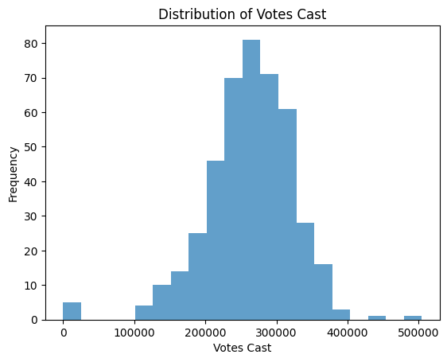
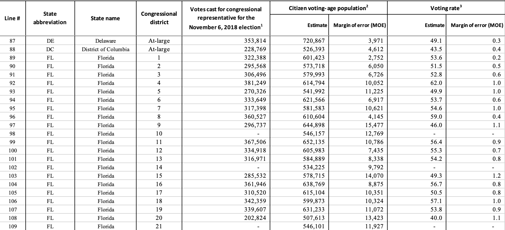
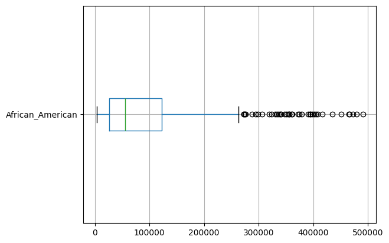

Code
import pandas as pd
census_df = pd.read_csv('../../data/raw-data/census_raw_data.csv') Data cleaning is the next step in processing data into actionable insights. Data cleaning involves removing NaNs, removing outliers, renaming columns, and applying transformations. Without performing such actions, we would not be able to draw any conclusions from our data as we will be analyzing inconsistent and incompatible data. My goal for data cleaning was to make sure my data had consistent, easy to read column names and row values, consistently formatted data, and standardization.
Standardizaiton, also known as Z-Score Normalization is needed when a distribution is going to be used in a K-Means clustering, PCA, or , as it minimizes the amount of bias larger features get. Z-Score Standardization alters the data set so each variable will have a mean of 0, and a standard deviation of 1. This is done by subtracting the mean by every data point, and dividing by the standard deviation. After this process, data is ready to be further analyzed in clustering and dimensional reduction.
\[z = \frac{x - \mu}{\sigma}\]
After obtaining the data for census_df, it was time to clean. The first thing I did was check for NA values, and found there were none. Next, I chose to perform column mapping on my dataset, as the current columns were code names such as K202801_004E and were confusing to understand. After cleaning the column names, the next step in data cleaning was to fix the state column. Currently this held the state FIPS identifier, with 1 for Alabama, 2 for Alaska, etc. I chose to map each FIPS code to the state name for easier identification and interpretability.
column_mapping = {
"K200101_001E": "Total_Population",
"K200201_002E": "White",
"K200201_003E": "African_American",
"K200201_005E": "Asian",
"K200201_004E": "American_Indian_and_Alaska_Native",
"K200201_006E": "Native_Hawaiian_and_Pacific_Islander",
"K202101_002E": "Veterans",
"K202101_006E": "Nonveterans",
"K201701_002E": "Below_Poverty_Level",
"K201902_001E": "Median_Household_Income",
"K201501_004E": "High_School_Graduate",
"K201501_007E": "Bachelors_Degree_or_Higher",
"K202801_002E": "Households_with_Computers",
"K202801_004E": "Households_with_Internet",
"K200103_001E": "Median_Age",
"NAME": "District_Name",
"congressional district": "Congressional_District"
}
census_df.rename(columns=column_mapping, inplace=True)
fips_to_state = {
1: "Alabama",
2: "Alaska",
4: "Arizona",
5: "Arkansas",
6: "California",
8: "Colorado",
9: "Connecticut",
10: "Delaware",
11: "District of Columbia",
12: "Florida",
13: "Georgia",
15: "Hawaii",
16: "Idaho",
17: "Illinois",
18: "Indiana",
19: "Iowa",
20: "Kansas",
21: "Kentucky",
22: "Louisiana",
23: "Maine",
24: "Maryland",
25: "Massachusetts",
26: "Michigan",
27: "Minnesota",
28: "Mississippi",
29: "Missouri",
30: "Montana",
31: "Nebraska",
32: "Nevada",
33: "New Hampshire",
34: "New Jersey",
35: "New Mexico",
36: "New York",
37: "North Carolina",
38: "North Dakota",
39: "Ohio",
40: "Oklahoma",
41: "Oregon",
42: "Pennsylvania",
44: "Rhode Island",
45: "South Carolina",
46: "South Dakota",
47: "Tennessee",
48: "Texas",
49: "Utah",
50: "Vermont",
51: "Virginia",
53: "Washington",
54: "West Virginia",
55: "Wisconsin",
56: "Wyoming",
60: "American Samoa",
66: "Guam",
69: "Northern Mariana Islands",
72: "Puerto Rico",
78: "Virgin Islands"
}
# Assuming your dataset has a 'FIPS' column
census_df['state'] = census_df['state'].map(fips_to_state)
# Drop specific columns by name
columns_to_drop = ['District_Name']
census_df = census_df.drop(columns=columns_to_drop) Total_Population African_American White Asian Veterans Nonveterans \
0 715346 196891 479949 10627 51744 499929
1 708409 183949 490987 13049 51572 500213
2 725634 130913 539903 12215 55771 510612
3 686297 51171 591084 3072 39104 491300
4 660468 416885 221541 5007 33737 481571
Below_Poverty_Level Median_Household_Income High_School_Graduate \
0 118962 46445 163604
1 124289 45832 150206
2 91640 57174 135017
3 119113 45387 158561
4 156399 37123 146697
Bachelors_Degree_or_Higher Households_with_Computers \
0 79243 239264
1 61435 233058
2 108527 262575
3 51598 217239
4 56008 203824
Households_with_Internet American_Indian_and_Alaska_Native \
0 209561 6992
1 204349 1300
2 240933 3123
3 194848 4391
4 179334 1907
Native_Hawaiian_and_Pacific_Islander Median_Age state \
0 183 40.3 Alabama
1 0 39.2 Alabama
2 160 39.5 Alabama
3 677 40.5 Alabama
4 206 36.4 Alabama
Congressional_District
0 1
1 3
2 5
3 4
4 7 Total_Population 0
African_American 0
White 0
Asian 0
Veterans 0
Nonveterans 0
Below_Poverty_Level 0
Median_Household_Income 0
High_School_Graduate 0
Bachelors_Degree_or_Higher 0
Households_with_Computers 0
Households_with_Internet 0
American_Indian_and_Alaska_Native 0
Native_Hawaiian_and_Pacific_Islander 0
Median_Age 0
state 0
Congressional_District 0
dtype: int64Index(['Total_Population', 'African_American', 'White', 'Asian', 'Veterans',
'Nonveterans', 'Below_Poverty_Level', 'Median_Household_Income',
'High_School_Graduate', 'Bachelors_Degree_or_Higher',
'Households_with_Computers', 'Households_with_Internet',
'American_Indian_and_Alaska_Native',
'Native_Hawaiian_and_Pacific_Islander', 'Median_Age', 'state',
'Congressional_District'],
dtype='object')Similar to the Census Data, I first wanted to clean up the columns and check if there were any NA values. Due to the heading and split columns names in the raw data, the data was very messy and needed to be cleaned before any other data cleaning could be done. I first renamed the columns from the excel sheet for better understanding.
vote_df = pd.read_excel('../../data/raw-data/Votes2018.xlsx', skiprows=3)
vote_df.columns = [
"line_number",
"state_abbreviation",
"state",
"Congressional_District",
"votes_cast",
"citizen_voting_age_population_estimate",
"citizen_voting_age_population_moe",
"voting_rate_estimate",
"voting_rate_moe"
]/Users/iphone10/miniconda3/lib/python3.10/site-packages/openpyxl/worksheet/header_footer.py:48: UserWarning: Cannot parse header or footer so it will be ignored
warn("""Cannot parse header or footer so it will be ignored""")| line_number | state_abbreviation | state | Congressional_District | votes_cast | citizen_voting_age_population_estimate | citizen_voting_age_population_moe | voting_rate_estimate | voting_rate_moe | |
|---|---|---|---|---|---|---|---|---|---|
| 0 | 1 | AL | Alabama | 1 | 242617.0 | 544464.0 | 3424.0 | 44.560706 | 0.280231 |
| 1 | 2 | AL | Alabama | 2 | 226230.0 | 516295.0 | 5674.0 | 43.817972 | 0.481553 |
| 2 | 3 | AL | Alabama | 3 | 231915.0 | 543854.0 | 4099.0 | 42.642878 | 0.321397 |
| 3 | 4 | AL | Alabama | 4 | 230969.0 | 515701.0 | 4678.0 | 44.787386 | 0.406273 |
| 4 | 5 | AL | Alabama | 5 | 260673.0 | 551968.0 | 2121.0 | 47.226107 | 0.181472 |
line_number 4
state_abbreviation 11
state 11
Congressional_District 11
votes_cast 11
citizen_voting_age_population_estimate 11
citizen_voting_age_population_moe 11
voting_rate_estimate 11
voting_rate_moe 11
dtype: int64 line_number state_abbreviation \
436 NaN NaN
437 NaN NaN
438 Notes: NaN
439 - Congressional districts 10, 14, 21, and 24 i... NaN
440 1 Votes as collected by state election offices... NaN
state Congressional_District votes_cast \
436 NaN NaN NaN
437 NaN NaN NaN
438 NaN NaN NaN
439 NaN NaN NaN
440 NaN NaN NaN
citizen_voting_age_population_estimate \
436 NaN
437 NaN
438 NaN
439 NaN
440 NaN
citizen_voting_age_population_moe voting_rate_estimate voting_rate_moe
436 NaN NaN NaN
437 NaN NaN NaN
438 NaN NaN NaN
439 NaN NaN NaN
440 NaN NaN NaN The NA values in the data are due to metadata:
(Source: U.S. Census Bureau)
import matplotlib.pyplot as plt
# Remove rows where 'votes_cast' is NaN
vote_df = vote_df[vote_df['votes_cast'].notna()]
# Ensure there are valid values to plot
vote_df['votes_cast'].plot(kind='hist', bins=20, alpha=0.7)
plt.title("Distribution of Votes Cast")
plt.xlabel("Votes Cast")
plt.ylabel("Frequency")
plt.show()
When plotting the data to check for outliers, there showed 5 districts where zero votes were cast.
This is what the metadata had stated, with districts 10, 14, 21, and 24 in Florida and district 9 in North Carolina not reporting votes.

In the process of cleaing, I noticed that states that only contained 1 Congressional District were labeled as “At-large” as opposed to 1, 2, etc, as seen with Delaware and District of Columbia . I utilized code to convert these into ‘1’ for data homogeneity.
Similar to the census_data, I believed that removing outliers could result in the loss of valuable insights. However, I felt it was necessary to examine the distribution of features that I believe are key contributors to Voting Rate.
I also decided to drop the columns:
- "line_number"
- "citizen_voting_age_population_moe"
- "voting_rate_moe"
These columns were removed as they may interfere with further analysis down the road.

After exploring the data through plots and statistics, I realized that although there were some variables that were skewed, it was not in best practice to completely omit them, as this could be a key indicator of voter turnout (Urban vs rural, socioeconomic standing, small districts vs big districts).
I chose to use standardization instead of omitting outliers to prepare data for further analysis. I made a copy of the original data frame to maintain for testing and comparison, and then called StandardScalar from SKLearn to fit the numeric values of the dataset. After doing so, the mean of every variable is 0, with a standard deviation of 1.
In the Census Dataframe, I chose all columns that were numerical values. In the Votes Data frame, I chose all numerical values as well, including voting rate. Even though voting_rate already on a standardized scale (out of 100), to maintain data homogeneity and not let algorithms treat them differently I chose it was best to standardize this variable as well.
from sklearn.preprocessing import StandardScaler
# Define columns to standardize
columns_to_standardize = ['votes_cast', 'citizen_voting_age_population_estimate', 'voting_rate_estimate']
# Select numerical columns for standardization
numerical_cols = ['Total_Population', 'African_American', 'White', 'Asian', 'Veterans',
'Nonveterans', 'Below_Poverty_Level', 'High_School_Graduate',
"Bachelors_Degree_or_Higher", "Households_with_Computers",
"Households_with_Internet", "American_Indian_and_Alaska_Native",
"Native_Hawaiian_and_Pacific_Islander", "Median_Household_Income", "Median_Age"]
# Make a copy of census_df
census_standard_df = census_df.copy()
# Initialize StandardScaler
scaler = StandardScaler()
# Standardize the numerical columns
census_standard_df[numerical_cols] = scaler.fit_transform(census_standard_df[numerical_cols])
# Check the first few rows to confirm scaling
print(census_standard_df.head())
# Initialize StandardScaler for vote_df
scaler = StandardScaler()
vote_standard_df = vote_df.copy()
vote_standard_df[columns_to_standardize] = scaler.fit_transform(vote_standard_df[columns_to_standardize]) Total_Population African_American White Asian Veterans \
0 -0.314384 0.970773 -0.432776 -0.601424 0.673281
1 -0.368058 0.846057 -0.359566 -0.555218 0.662215
2 -0.234783 0.334971 -0.035131 -0.571129 0.932348
3 -0.539144 -0.433469 0.304326 -0.745557 -0.139884
4 -0.738990 3.090763 -2.146664 -0.708642 -0.485158
Nonveterans Below_Poverty_Level Median_Household_Income \
0 -0.416259 0.287950 -1.002315
1 -0.413525 0.364380 -1.036189
2 -0.313431 -0.104054 -0.409433
3 -0.499317 0.290117 -1.060779
4 -0.592962 0.825080 -1.517445
High_School_Graduate Bachelors_Degree_or_Higher \
0 0.624607 -0.621344
1 0.288741 -1.086251
2 -0.092022 0.143164
3 0.498187 -1.343062
4 0.200776 -1.227932
Households_with_Computers Households_with_Internet \
0 -0.440646 -0.695362
1 -0.592771 -0.832347
2 0.130768 0.129174
3 -0.980536 -1.082058
4 -1.309372 -1.489806
American_Indian_and_Alaska_Native Native_Hawaiian_and_Pacific_Islander \
0 0.037155 -0.234352
1 -0.332663 -0.268624
2 -0.214220 -0.238660
3 -0.131836 -0.141838
4 -0.293226 -0.230045
Median_Age state Congressional_District
0 0.464422 Alabama 1
1 0.162491 Alabama 3
2 0.244836 Alabama 5
3 0.519318 Alabama 4
4 -0.606060 Alabama 7 I merged the two datasets using an inner join with "state" and "Congressional_district" as keys. For compatibility, I converted both "Congressional_district" columns in each DataFrame to strings.
The resulting DataFrames:
- merged_df
- merged_standard_df
were then exported to the processed data folder.
# Convert Congressional_District to string in both DataFrames
census_df['Congressional_District'] = census_df['Congressional_District'].astype(str)
vote_df['Congressional_District'] = vote_df['Congressional_District'].astype(str)
census_standard_df['Congressional_District'] = census_standard_df['Congressional_District'].astype(str)
vote_standard_df['Congressional_District'] = vote_standard_df['Congressional_District'].astype(str)
# Merge the datasets
merged_df = census_df.merge(vote_df, on=['state', 'Congressional_District'], how='inner')
merged_standard_df = census_standard_df.merge(vote_standard_df, on=['state', 'Congressional_District'], how='inner')Index(['Total_Population', 'African_American', 'White', 'Asian', 'Veterans',
'Nonveterans', 'Below_Poverty_Level', 'Median_Household_Income',
'High_School_Graduate', 'Bachelors_Degree_or_Higher',
'Households_with_Computers', 'Households_with_Internet',
'American_Indian_and_Alaska_Native',
'Native_Hawaiian_and_Pacific_Islander', 'Median_Age', 'state',
'Congressional_District', 'line_number', 'state_abbreviation',
'votes_cast', 'citizen_voting_age_population_estimate',
'citizen_voting_age_population_moe', 'voting_rate_estimate',
'voting_rate_moe'],
dtype='object')U.S. Census Bureau. Number of Votes Cast, Citizen Voting-Age Population and Voting Rates for Congressional Districts: 2018. U.S. Census Bureau, 2019, https://www.census.gov/data/tables/time-series/demo/voting-and-registration/congressional-voting-tables.html.